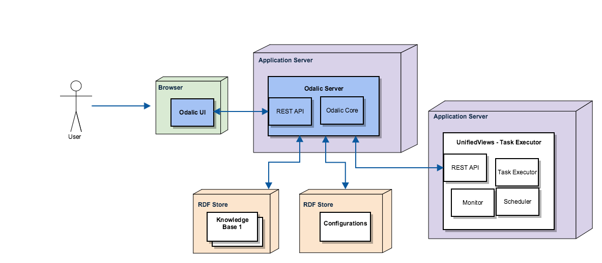

Brief overview of components

More detailed:
|
Web UI
A part of the application running in a user's web browser.
Web Backend
This is a component tightly coupled with Web UI. Its existence is questionable, but may be desired if we are to allow additional functionalities to users that the REST API component does not provide, such as saving multiple input files before running a conversion on them, etc.
Time Notifier
According to observer pattern (https://en.wikipedia.org/wiki/Observer_pattern). Notifies about passed time to subscribed components.
File Cache
Saving temporary files. For instance, a user uploads a CSV file before running a conversion - this file must be stored somewhere in the meantime. Additionally, after the user runs a task (and the task has completed), the expected output may not be picked up by the user immediately, therefore we need to save it somewhere temporarily.
Core Algorithm
An extension of the original TableMiner+. Runs the submitted tasks.
This component should run in its own instance, independently of REST API Wrapper (the REST API would become unusable during conversions otherwise).
It is expected there will be a Queue of submitted tasks (items pushed by a REST API Wrapper's subcomponent - Task Queue). The Computing unit runs tasks over input files that are stored in the File Cache. After the Computing unit finishes a certain task popped from the queue, it should report back to the Task Queue about the task (+ send output data). This is represented by <<calls>>. Then, it should start over working on further tasks. (If queue is empty, it can 'sleep', and may be awaken while pushing a new task.)
Since we cannot inspect the progress of a particular task inside the Computing unit by an outside observer, the Computing unit should probably report progress back to the Task Queue component in certain stages of a conversion task in a similar way.
Data Store
For saving configurations and tasks (and possibly some other data). The RDF Database should not be accessed directly, thus the RDF DB Proxy component.
RDF DB Proxy should translate requests for "getting" and "setting" data (namely configuration and task objects) to something that RDF Database 'understands'.
REST API Wrapper
Authentication
Questionable how the authentication should be handled (http://stackoverflow.com/questions/319530/restful-authentication), for now let's only assume that we have something, which magically takes care of the matter.
Access Control List
The name of the component is ambitious; it will probably stay on the level of 'protection ring', or something otherwise simple. We need to differentiate at least between 2 kinds of users ('ordinary' and 'administrators'), thus the need for a something like a list of permissions for each object.
Configurations
Expected interface is something in a way of:
ConfigID SaveConfig(ConfigurationData)- Store the provided configuration into the database and return
ConfigID, so it can be later referenced from tasks, etc. ConfigurationDatacarries complete information about a particular configuration
- Store the provided configuration into the database and return
ConfigurationData GetConfig(ConfigID)- Returns a configuration (that was previously stored in the RDF Database) in a form of
ConfigurationData
- Returns a configuration (that was previously stored in the RDF Database) in a form of
void DeleteConfig(ConfigID)- Removes the referenced configuration
The component should 'negotiate' with RDF DB Proxy to either access, store or delete a certain configuration. For simplicity, we could, for example, assume, that ConfigurationData is in JSON format. Since the underlying language (Java) does not resolve JSON by default (I think), File Converter is used to transform JSON into Java objects and vice versa.
By the way, of course, this is REST, so methods should be imagined in this way:
ConfigurationData GetConfig(ConfigID my_id) => curl -get http://.../GetConfig/my_id/
The content-type of the returned object should match that of ConfigurationData (e.g. JSON)
Task Queue
Proposed interface:
TaskID PushTask(TaskData, ConfigID)- Stores the task into the RDF Database
- The task will use the specified configuration
TaskData= input file to be run a task on- And runs the specified task
TaskInfoData GetTaskInfo(TaskID)- Returns certain information about the specified task (configurations, progress, ...)
ResultData GetResult(TaskID)- If the task has been completed, returns the result (in RDF, presumably)
The dataflow may be like this:
- First, a task object (carries basic information about the task, such as date when added, owner, etc.) is stored into the RDF Database (via RDF DB Proxy) for later reference. Input file is stored in the File Cache.
- After the task has been run, file reference, TaskID and other information, are pushed into the Queue of submitted tasks.
- When Computing unit starts executing the task, it will be reporting progress back to the Task Queue. For this reason the Task Queue may cache the task object, so it doesn't have to update it in the RDF Database each time the progress is reported. (That would probably render our system slow-ish.)
- Once the task is finished, the Computing unit stores the result as a file in the File Cache (for a certain period of time) and the input file may be deleted. Then it reports back to the Task Queue. The task object is updated in the RDF Database (via RDF DB Proxy) and possibly removed from the proposed cache.
- Finally, if the result is still stored in the File Cache, it may be returned upon a request.
File Converter
Was discussed in Configurations part.
{kind=link}
{kind=link}
{kind=link}
{kind=link}
{kind=link}
{kind=link}
{kind=link}
{kind=link}
{kind=link}
{kind=link}
{kind=link}
{kind=link}
{kind=link}
{kind=link}
{kind=link}
{kind=link}
{kind=link}
{kind=link}
{kind=link}
{kind=link}
{kind=link}
{kind=link}
{kind=link}
{kind=link}